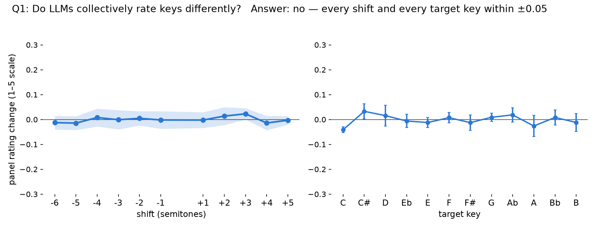
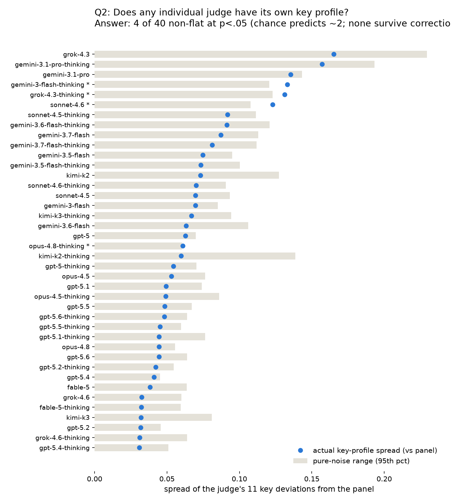

Method: the 9 blind-listening model-comparison code-gen pieces, shifted into the other 11 keys in mode; all 40 models judge every version, blind. Each judge is scored as its deviation from the other 39 on the same piece and key, so piece quality and transposition artifacts cancel — non-zero means that judge treats the key differently from the panel.


| model | favorite key | favorite-key bonus | 95% ± | n in key | |
|---|---|---|---|---|---|
| ALL MODELS (mean) | +0.01 | ±0.03 | 40 | ||
| kimi-k2-thinking | D (38%) | +0.25 | ±0.18 | 7 | |
| gpt-5 | D (100%) | +0.20 | ±0.24 | 7 | |
| grok-4.3 | D (35%) | +0.16 | ±0.21 | 7 | |
| gpt-5.6 | D (79%) | +0.11 | ±0.12 | 7 | |
| sonnet-4.6 | D (77%) | +0.11 | ±0.20 | 7 | |
| gemini-3.5-flash-thinking | G (39%) | +0.11 | ±0.12 | 9 | |
| gemini-3.1-pro | A (76%) | +0.11 | ±0.24 | 9 | |
| gpt-5.5 | D (95%) | +0.10 | ±0.12 | 7 | |
| gemini-3.7-flash | D (79%) | +0.09 | ±0.15 | 7 | |
| gpt-5.5-thinking | D (93%) | +0.09 | ±0.13 | 7 | |
| gemini-3.5-flash | G (36%) | +0.06 | ±0.11 | 9 | |
| sonnet-4.6-thinking | D (47%) | +0.06 | ±0.16 | 7 | |
| sonnet-4.5-thinking | D (80%) | +0.06 | ±0.16 | 7 | |
| opus-4.5-thinking | D (41%) | +0.04 | ±0.08 | 7 | |
| kimi-k3-thinking | D (80%) | +0.04 | ±0.18 | 7 | |
| opus-4.8-thinking | A (50%) | +0.04 | ±0.12 | 9 | |
| opus-4.8 | D (87%) | +0.03 | ±0.21 | 7 | |
| opus-4.5 | D (97%) | +0.03 | ±0.25 | 7 | |
| fable-5-thinking | E (52%) | +0.02 | ±0.13 | 8 | |
| gpt-5.1-thinking | D (64%) | +0.02 | ±0.22 | 7 | |
| gpt-5.4 | D (77%) | +0.02 | ±0.13 | 7 | |
| gpt-5.4-thinking | D (87%) | +0.01 | ±0.08 | 7 | |
| gpt-5.1 | A (53%) | +0.01 | ±0.15 | 9 | |
| gpt-5.2 | D (82%) | +0.00 | ±0.11 | 7 | |
| fable-5 | D (85%) | -0.00 | ±0.19 | 7 | |
| gpt-5-thinking | D (71%) | -0.01 | ±0.16 | 7 | |
| grok-4.6 | E (30%) | -0.02 | ±0.14 | 8 | |
| gemini-3.6-flash | C (45%) | -0.03 | ±0.25 | 5 | |
| gpt-5.2-thinking | D (95%) | -0.03 | ±0.10 | 7 | |
| grok-4.3-thinking | C (80%) | -0.05 | ±0.32 | 5 | |
| sonnet-4.5 | D (90%) | -0.06 | ±0.22 | 7 | |
| grok-4.6-thinking | A (54%) | -0.06 | ±0.10 | 9 | |
| gpt-5.6-thinking | D (87%) | -0.07 | ±0.10 | 7 | |
| kimi-k3 | D (84%) | -0.09 | ±0.27 | 7 | |
| gemini-3-flash-thinking | C (56%) | -0.10 | ±0.14 | 5 | |
| gemini-3-flash | C (100%) | -0.10 | ±0.11 | 5 | |
| kimi-k2 | D (37%) | -0.11 | ±0.24 | 7 | |
| gemini-3.6-flash-thinking | D (57%) | -0.16 | ±0.28 | 7 | |
| gemini-3.7-flash-thinking | D (89%) | -0.24 | ±0.31 | 7 | |
| gemini-3.1-pro-thinking | A (37%) | -0.32 | ±0.51 | 9 |